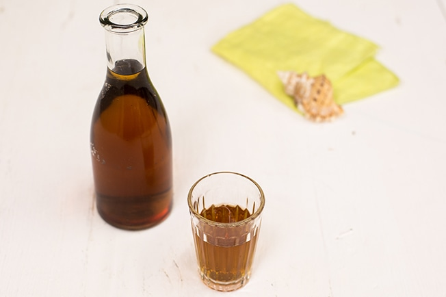

Mate com Limão

Descrição
Um clássico do verão, bom para aplacar o calor nas tardes calorentas e nos piqueniques sob o sol.
O segredo para o sabor ideal, que lembra aquele mate que vende na praia, está nas proporções.
Ingredientes
- 800 ml de água filtrada
- 4 saquinhos de chá mate
- caldo de ½ limão
- 2 colheres (sopa) de açúcar
- cubos de gelo a gosto
Modo de Preparo
- Coloque a água numa chaleira e leve ao fogo alto para ferver. Desligue o fogo, mergulhe os saquinhos de chá, tampe e deixe em infusão. Espere amornar e leve para a geladeira até ficar bem gelado (se preferir, prepare o chá no dia anterior para ficar bem gelado).
- Na hora de servir transfira o chá para o liquidificador, junte o caldo limão, o açúcar e cubos de gelo a gosto. Bata bem para triturar o gelo e transfira para uma jarra. Sirva a seguir.
Home